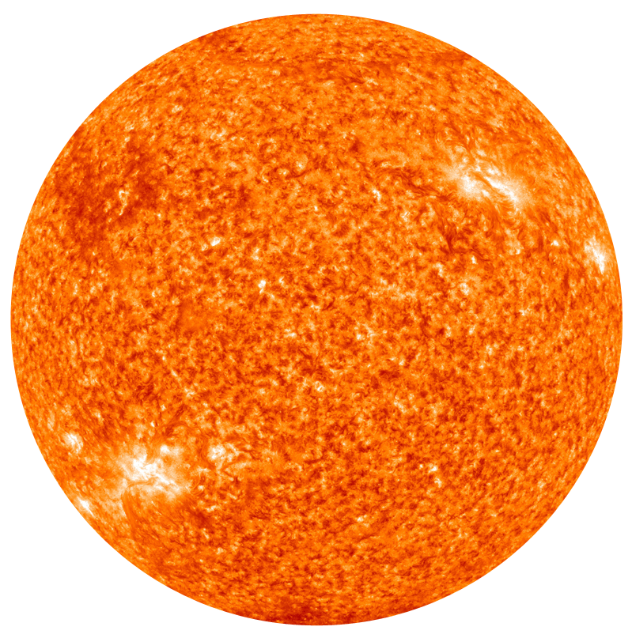

O sistema solar:
Sol
O Sol é a estrela central do nosso sistema solar, responsável por fornecer a luz e o calor que tornam a vida na Terra possível. Com um diâmetro de cerca de 1,4 milhão de quilômetros, ele representa mais de 99% da massa total do sistema solar. Através de reações de fusão nuclear em seu núcleo, o Sol transforma hidrogênio em hélio, emitindo energia que viaja pelo espaço e sustenta a atmosfera dos planetas ao seu redor.
Mercurio

Mercúrio, o planeta mais próximo do Sol, é um mundo de extremos. Com temperaturas que variam drasticamente entre o dia e a noite, ele apresenta uma superfície craterada e semelhante à da Lua. Pequeno e rápido, Mercúrio completa uma órbita ao redor do Sol em apenas 88 dias, sendo também o menor planeta do sistema solar.
Vênus

Vênus, muitas vezes chamado de "irmão da Terra" devido ao seu tamanho e composição semelhantes, é um planeta envolto em uma densa atmosfera de dióxido de carbono. Conhecido por suas temperaturas extremamente altas e pressão atmosférica intensa, Vênus é um dos objetos mais brilhantes no céu noturno, mas sua superfície é um inferno escaldante, marcada por vulcões e paisagens rochosas.
Terra

A Terra é o único planeta conhecido que abriga vida, graças à sua posição privilegiada na zona habitável do sistema solar. Com uma atmosfera rica em oxigênio e água em estado líquido, a Terra apresenta uma diversidade de ecossistemas e climas. Sua superfície é composta por continentes e oceanos, proporcionando um lar único para milhões de espécies.
Marte

Marte, o "planeta vermelho", é famoso por sua cor distinta, causada pela presença de óxido de ferro em sua superfície. Com características geológicas fascinantes, como o maior vulcão e o maior canyon do sistema solar, Marte tem despertado o interesse humano na busca por vida extraterrestre e na possibilidade de colonização futura.
Júpiter

Júpiter é o gigante gasoso do sistema solar e o maior dos planetas, com um diâmetro mais de 11 vezes maior que o da Terra. Com uma atmosfera turbulenta e bandas de nuvens, Júpiter é famoso por sua Grande Mancha Vermelha, uma tempestade colossal. Ele também possui um extenso sistema de luas, incluindo as famosas luas galileanas: Io, Europa, Ganimedes e Calisto.
Saturno

Saturno é conhecido por seus impressionantes anéis, que são compostos de gelo e partículas rochosas. Segundo maior planeta do sistema solar, Saturno é um gigante gasoso com uma atmosfera rica em hidrogênio e hélio. Suas numerosas luas, como Titã, atraem a atenção dos cientistas, que estudam as possibilidades de vida e características únicas desses satélites.
Urano

Urano é um gigante gasoso com uma cor azulada distinta, resultado da presença de metano em sua atmosfera. Ele se destaca por seu eixo de rotação inclinado quase 90 graus, fazendo com que suas estações sejam extremamente diferentes das dos outros planetas. Além disso, Urano possui um sistema de anéis e mais de 20 luas conhecidas, cada uma com suas próprias características intrigantes.
Netuno

Netuno, o planeta mais distante do sistema solar, é um gigante gasoso com uma atmosfera dinâmica, repleta de tempestades e ventos intensos. Conhecido por seu tom azul profundo, também devido ao metano, Netuno possui um sistema de anéis tênues e várias luas, sendo Tritão a mais famosa, conhecida por sua atividade geológica e por ser uma das poucas luas do sistema solar com uma atmosfera significativa.